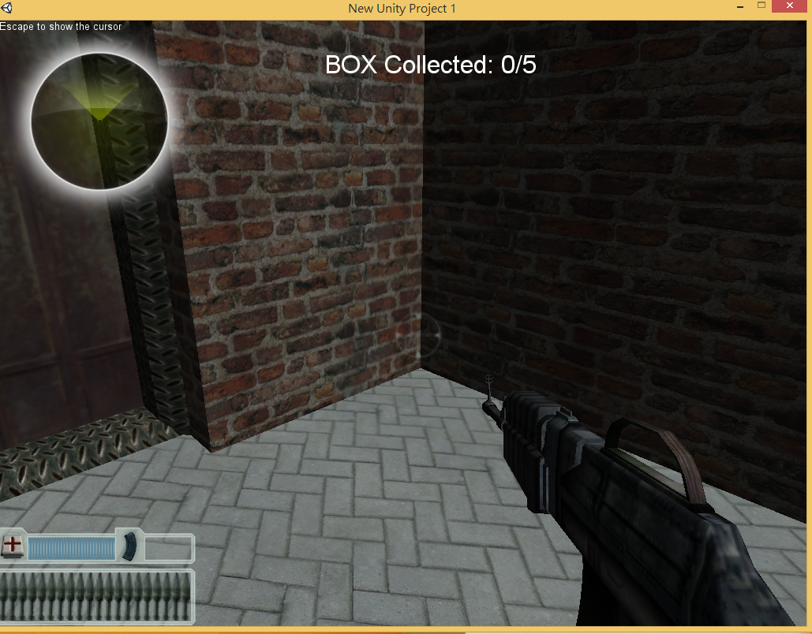
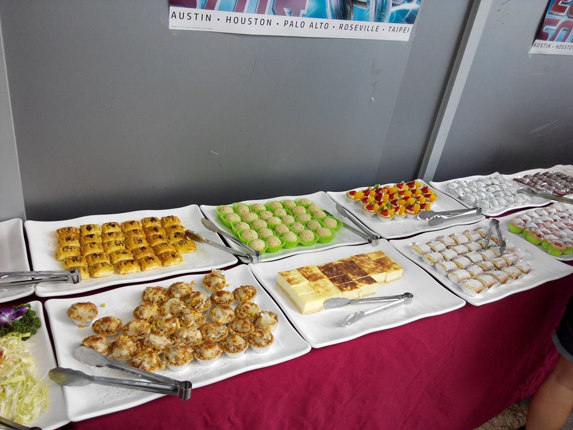

CYCC 3.0
嘉中電腦社3.0
CYCC@2016迎新貼心小提醒：建議使用 "鍵盤方向鍵" 轉場
WHO ARE WE?
我們是尛?
我們，是一群熱愛資訊科技的高中生
我們，互相學習，共同研究
我們，用我們的技術，創造不可能
迎新專題演講簡介：
有興趣的人
歡迎來 214 找 楊志璿 詢問
歡迎來 208 找 陳贊旭 詢問
我們的專題演講有什麼
- WEB HACKING 駭客實務攻防
- 講師：黃志仁
- 資歷：VulReport排行第10名
- 嘉中電腦社2.0社長
- 曾駭入許多學校主機
-
網路黑客紅人 - 演講時間10/29 10:30~12:00
演講2
- 大型APP專案經驗談 與 開源貢獻
- 講師：黃一晉
- 資歷：SITCON 2016 "談論台灣資訊未來"主持人
- 台灣雷亞遊戲Rayark 開發人員
- Rayark後臺管理員
- 製作 神作 VOEZ 遊戲
- COSCUP工作人員
- 還有很多很多...
- 演講時間10/29 14:00~16:00
小小介紹一下社團
嘉中電腦社 3.0
WHAT WE DO?
>>我們在幹嘛?<< 請往下我們
寫程式
我們
做遊戲
我們
打網頁
自製網站可是...這樣好像死肥宅Q A Q
N O！
NOT AT ALL
我們有很多活動
Eg：很多大地遊戲，全台盛大聚會...
我們還有潮強大的友社!!
- 建中資訊社、北一電研、成功電研
- 中一中、中女電研
- 彰中彰女電研
- 南一中、南二中、南女
- More And More!
附上幾張照片作證...

誰適合加入我們
- 對資訊領域有熱忱
- 想訓練自己的邏輯思考力
- 想讓自己有別人沒有的能力
- 想在電腦教室吹冷氣，喝冰水(X
- 想有免費的點心，顯卡，和HITCON認證徽章 (額...這等你來解釋)
- 想認識更多別的學校的
妹子，大神
食物 OwO
THE END
WELCOME TO CYCC 3.0
麻煩動動手幫我們粉專按讚喔~